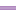

<!doctype html>
<html lang="en">
    <head>
        <meta charset="utf-8">
        <meta http-equiv="X-UA-Compatible" content="IE=edge">
        <meta name="viewport" content="initial-scale=1,user-scalable=no,maximum-scale=1,width=device-width">
        <meta name="mobile-web-app-capable" content="yes">
        <meta name="apple-mobile-web-app-capable" content="yes">
        <link rel="stylesheet" href="css/leaflet.css">
        <link rel="stylesheet" href="css/qgis2web.css"><link rel="stylesheet" href="css/fontawesome-all.min.css">
        <style>
        html, body, #map {
            width: 100%;
            height: 100%;
            padding: 0;
            margin: 0;
        }
        </style>
        <title></title>
    </head>
    <body>
        <div id="map">
        </div>
        <script src="js/qgis2web_expressions.js"></script>
        <script src="js/leaflet.js"></script>
        <script src="js/multi-style-layer.js"></script>
        <script src="js/leaflet.rotatedMarker.js"></script>
        <script src="js/leaflet.pattern.js"></script>
        <script src="js/leaflet-hash.js"></script>
        <script src="js/Autolinker.min.js"></script>
        <script src="js/rbush.min.js"></script>
        <script src="js/labelgun.min.js"></script>
        <script src="js/labels.js"></script>
        <script src="data/Iztacalco_3.js"></script>
        <script src="data/SenderosIztacalco_4.js"></script>
        <script>
        var map = L.map('map', {
            zoomControl:true, maxZoom:28, minZoom:1
        }).fitBounds([[19.354718047518613,-99.15391378082197],[19.4325909263469,-99.0372498383202]]);
        var hash = new L.Hash(map);
        map.attributionControl.setPrefix('<a href="https://github.com/tomchadwin/qgis2web" target="_blank">qgis2web</a> &middot; <a href="https://leafletjs.com" title="A JS library for interactive maps">Leaflet</a> &middot; <a href="https://qgis.org">QGIS</a>');
        var autolinker = new Autolinker({truncate: {length: 30, location: 'smart'}});
        var bounds_group = new L.featureGroup([]);
        function setBounds() {
        }
        map.createPane('pane_GoogleSatellite_0');
        map.getPane('pane_GoogleSatellite_0').style.zIndex = 400;
        var layer_GoogleSatellite_0 = L.tileLayer('https://mt1.google.com/vt/lyrs=s&x={x}&y={y}&z={z}', {
            pane: 'pane_GoogleSatellite_0',
            opacity: 0.8,
            attribution: '<a href="https://www.google.at/permissions/geoguidelines/attr-guide.html">Map data ©2015 Google</a>',
            minZoom: 1,
            maxZoom: 28,
            minNativeZoom: 0,
            maxNativeZoom: 20
        });
        layer_GoogleSatellite_0;
        map.createPane('pane_Positron_1');
        map.getPane('pane_Positron_1').style.zIndex = 401;
        var layer_Positron_1 = L.tileLayer('https://a.basemaps.cartocdn.com/light_all/{z}/{x}/{y}.png', {
            pane: 'pane_Positron_1',
            opacity: 1.0,
            attribution: '<a href="https://cartodb.com/basemaps/">Map tiles by CartoDB, under CC BY 3.0. Data by OpenStreetMap, under ODbL.</a>',
            minZoom: 1,
            maxZoom: 28,
            minNativeZoom: 0,
            maxNativeZoom: 20
        });
        layer_Positron_1;
        map.createPane('pane_GoogleRoad_2');
        map.getPane('pane_GoogleRoad_2').style.zIndex = 402;
        var layer_GoogleRoad_2 = L.tileLayer('https://mt1.google.com/vt/lyrs=m&x={x}&y={y}&z={z}', {
            pane: 'pane_GoogleRoad_2',
            opacity: 0.8,
            attribution: '<a href="https://www.google.at/permissions/geoguidelines/attr-guide.html">Map data ©2015 Google</a>',
            minZoom: 1,
            maxZoom: 28,
            minNativeZoom: 0,
            maxNativeZoom: 20
        });
        layer_GoogleRoad_2;
        map.addLayer(layer_GoogleRoad_2);
        function pop_Iztacalco_3(feature, layer) {
            var popupContent = '<table>\
                    <tr>\
                        <td colspan="2">' + (feature.properties['id'] !== null ? autolinker.link(feature.properties['id'].toLocaleString()) : '') + '</td>\
                    </tr>\
                    <tr>\
                        <td colspan="2">' + (feature.properties['nomgeo'] !== null ? autolinker.link(feature.properties['nomgeo'].toLocaleString()) : '') + '</td>\
                    </tr>\
                    <tr>\
                        <td colspan="2">' + (feature.properties['cve_mun'] !== null ? autolinker.link(feature.properties['cve_mun'].toLocaleString()) : '') + '</td>\
                    </tr>\
                    <tr>\
                        <td colspan="2">' + (feature.properties['cve_ent'] !== null ? autolinker.link(feature.properties['cve_ent'].toLocaleString()) : '') + '</td>\
                    </tr>\
                    <tr>\
                        <td colspan="2">' + (feature.properties['cvegeo'] !== null ? autolinker.link(feature.properties['cvegeo'].toLocaleString()) : '') + '</td>\
                    </tr>\
                    <tr>\
                        <td colspan="2">' + (feature.properties['g_pnt_2'] !== null ? autolinker.link(feature.properties['g_pnt_2'].toLocaleString()) : '') + '</td>\
                    </tr>\
                </table>';
            layer.bindPopup(popupContent, {maxHeight: 400});
        }

        function style_Iztacalco_3_0() {
            return {
                pane: 'pane_Iztacalco_3',
                opacity: 1,
                color: 'rgba(160,44,44,1.0)',
                dashArray: '',
                lineCap: 'butt',
                lineJoin: 'miter',
                weight: 3.0, 
                fill: true,
                fillOpacity: 1,
                fillColor: 'rgba(243,166,178,0.0)',
                interactive: false,
            }
        }
        map.createPane('pane_Iztacalco_3');
        map.getPane('pane_Iztacalco_3').style.zIndex = 403;
        map.getPane('pane_Iztacalco_3').style['mix-blend-mode'] = 'normal';
        var layer_Iztacalco_3 = new L.geoJson(json_Iztacalco_3, {
            attribution: '',
            interactive: false,
            dataVar: 'json_Iztacalco_3',
            layerName: 'layer_Iztacalco_3',
            pane: 'pane_Iztacalco_3',
            onEachFeature: pop_Iztacalco_3,
            style: style_Iztacalco_3_0,
        });
        bounds_group.addLayer(layer_Iztacalco_3);
        map.addLayer(layer_Iztacalco_3);
        function pop_SenderosIztacalco_4(feature, layer) {
            var popupContent = '<table>\
                    <tr>\
                        <th scope="row">Sendero</th>\
                        <td>' + (feature.properties['Sendero'] !== null ? autolinker.link(feature.properties['Sendero'].toLocaleString()) : '') + '</td>\
                    </tr>\
                    <tr>\
                        <th scope="row">C_Inicio</th>\
                        <td>' + (feature.properties['C_Inicio'] !== null ? autolinker.link(feature.properties['C_Inicio'].toLocaleString()) : '') + '</td>\
                    </tr>\
                    <tr>\
                        <th scope="row">C_Final</th>\
                        <td>' + (feature.properties['C_Final'] !== null ? autolinker.link(feature.properties['C_Final'].toLocaleString()) : '') + '</td>\
                    </tr>\
                    <tr>\
                        <th scope="row">Colonia</th>\
                        <td>' + (feature.properties['Colonia'] !== null ? autolinker.link(feature.properties['Colonia'].toLocaleString()) : '') + '</td>\
                    </tr>\
                    <tr>\
                        <th scope="row">Alcaldia</th>\
                        <td>' + (feature.properties['Alcaldia'] !== null ? autolinker.link(feature.properties['Alcaldia'].toLocaleString()) : '') + '</td>\
                    </tr>\
                    <tr>\
                        <th scope="row">longitud</th>\
                        <td>' + (feature.properties['longitud'] !== null ? autolinker.link(feature.properties['longitud'].toLocaleString()) : '') + '</td>\
                    </tr>\
                    <tr>\
                        <th scope="row">long_km</th>\
                        <td>' + (feature.properties['long_km'] !== null ? autolinker.link(feature.properties['long_km'].toLocaleString()) : '') + '</td>\
                    </tr>\
                    <tr>\
                        <th scope="row">Long_Tabla</th>\
                        <td>' + (feature.properties['Long_Tabla'] !== null ? autolinker.link(feature.properties['Long_Tabla'].toLocaleString()) : '') + '</td>\
                    </tr>\
                    <tr>\
                        <th scope="row">VIALIDAD</th>\
                        <td>' + (feature.properties['VIALIDAD'] !== null ? autolinker.link(feature.properties['VIALIDAD'].toLocaleString()) : '') + '</td>\
                    </tr>\
                </table>';
            layer.bindPopup(popupContent, {maxHeight: 400});
        }

        function style_SenderosIztacalco_4_0() {
            return {
                pane: 'pane_SenderosIztacalco_4',
                opacity: 1,
                color: 'rgba(126,63,151,1.0)',
                dashArray: '',
                lineCap: 'square',
                lineJoin: 'bevel',
                weight: 3.0,
                fillOpacity: 0,
                interactive: true,
            }
        }
        function style_SenderosIztacalco_4_1() {
            return {
                pane: 'pane_SenderosIztacalco_4',
                opacity: 1,
                color: 'rgba(255,255,255,1.0)',
                dashArray: '',
                lineCap: 'square',
                lineJoin: 'bevel',
                weight: 1.0,
                fillOpacity: 0,
                interactive: true,
            }
        }
        map.createPane('pane_SenderosIztacalco_4');
        map.getPane('pane_SenderosIztacalco_4').style.zIndex = 404;
        map.getPane('pane_SenderosIztacalco_4').style['mix-blend-mode'] = 'normal';
        var layer_SenderosIztacalco_4 = new L.geoJson.multiStyle(json_SenderosIztacalco_4, {
            attribution: '',
            interactive: true,
            dataVar: 'json_SenderosIztacalco_4',
            layerName: 'layer_SenderosIztacalco_4',
            pane: 'pane_SenderosIztacalco_4',
            onEachFeature: pop_SenderosIztacalco_4,
            styles: [style_SenderosIztacalco_4_0,style_SenderosIztacalco_4_1,]
        });
        bounds_group.addLayer(layer_SenderosIztacalco_4);
        map.addLayer(layer_SenderosIztacalco_4);
        var baseMaps = {};
        L.control.layers(baseMaps,{' Senderos Iztacalco': layer_SenderosIztacalco_4,' Iztacalco': layer_Iztacalco_3,"Google Road": layer_GoogleRoad_2,"Positron": layer_Positron_1,"Google Satellite": layer_GoogleSatellite_0,},{collapsed:false}).addTo(map);
        setBounds();
        </script>
    </body>
</html>
